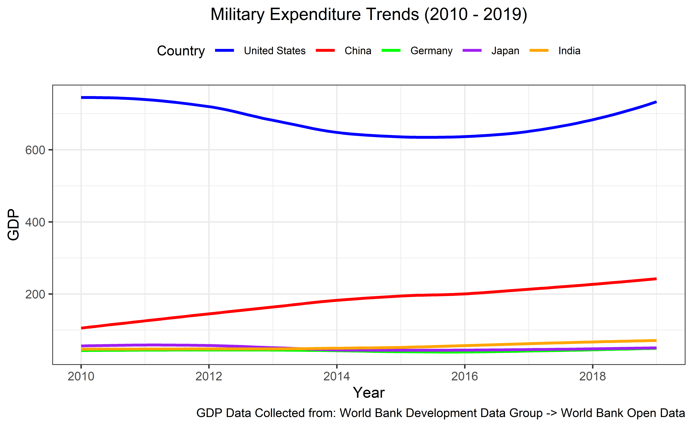
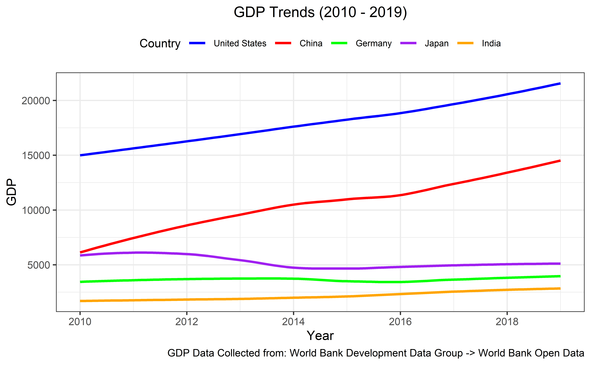
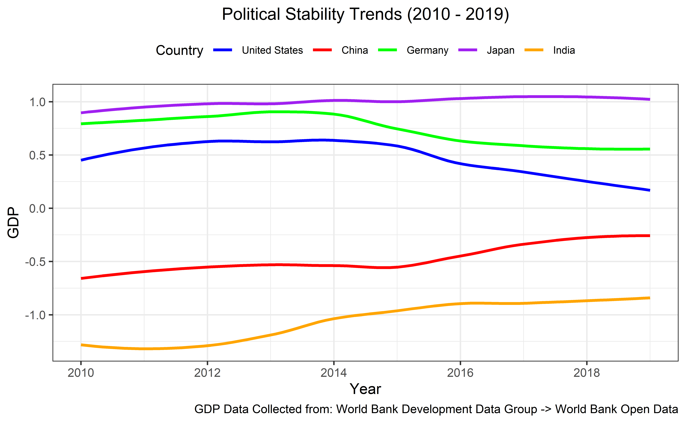
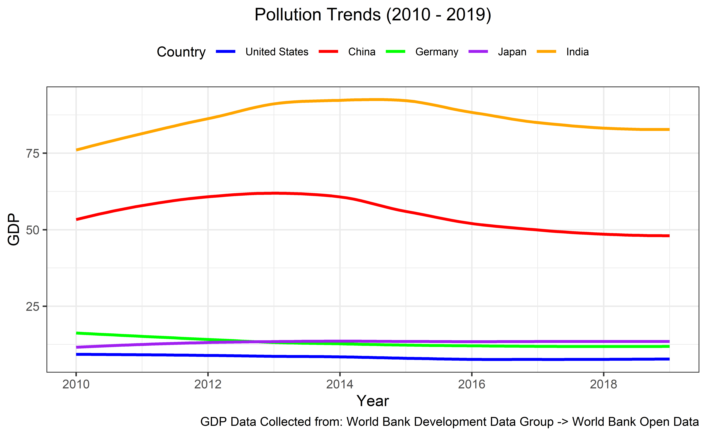
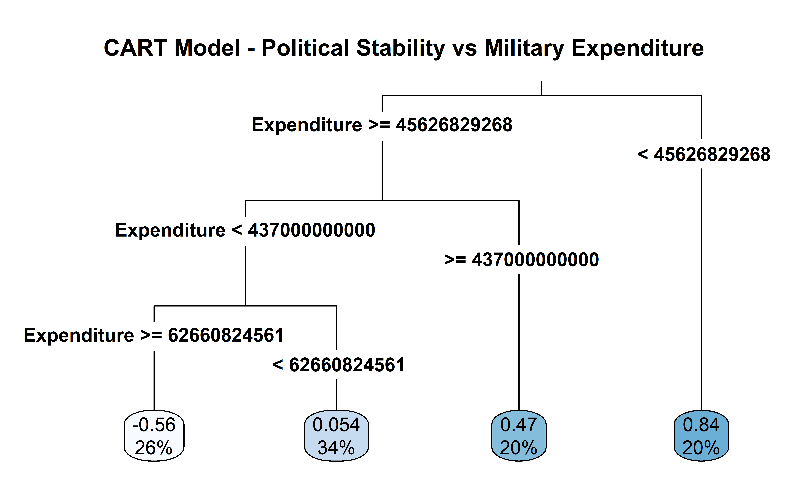
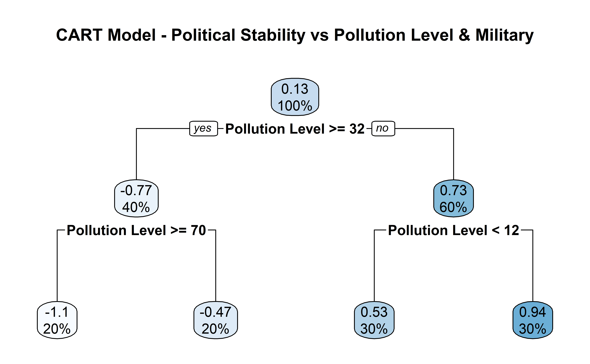

# Plot Theme
ggplot2::theme_set(ggplot2::theme_minimal(base_size = 14))
# Set Width of Code Output
options(width = 65)
# Set Figure Parameters for knitr
knitr::opts_chunk$set(
fig.width = 7, # 7" Width
fig.asp = 0.618, # The Golden Ratio
fig.retina = 3, # DPI Multiplier for Displaying HTML Output on Retina
fig.align = "center", # Center Align Figures
dpi = 300 # Higher DPI, Sharper Image
)
# Loading Packages
pacman::p_load("dplyr", "gsubfn", "here", "knitr", "tidyr", "stringr", "tidyverse", "scales", "cowplot")
pacman::p_load("rworldmap", "rworldxtra", "maps", "ggplot2", "patchwork", "gtable", "gt", "gridExtra")
pacman::p_load("rpart", "rpart.plot")
# Loading Necessary Datasets
gdp_data <- read.csv(here("data/global_gdp.csv"))
pollution_data <- read.csv(here("data/global_pollution.csv"))
defense_data <- read.csv(here("data/global_military_expense.csv"))
political_data <- read.csv(here("data/global_political_stability.csv"))
# Highliting Countries of Interest
coi <- c("United States", "China", "Germany", "Japan", "India")
# Assigning Colors to Each Country
country_colors <- c(
"United States" = "blue",
"China" = "red",
"Germany" = "green",
"Japan" = "purple",
"India" = "orange"
)
options(scipen = 999)
# Cleaning Column Names FOR All Datasets
colnames(gdp_data) <- gsub("^X", "", colnames(gdp_data))
colnames(gdp_data) <- gsub("\\.", "", colnames(gdp_data))
colnames(pollution_data) <- gsub("^X", "", colnames(pollution_data))
colnames(pollution_data) <- gsub("\\.", "", colnames(pollution_data))
colnames(defense_data) <- gsub("^X", "", colnames(defense_data))
colnames(defense_data) <- gsub("\\.", "", colnames(defense_data))
colnames(political_data) <- gsub("^X", "", colnames(political_data))
colnames(political_data) <- gsub("\\.", "", colnames(political_data))
# Convert the relevant columns to numeric, skipping the first column (Country Names)
gdp_data <- gdp_data %>%
mutate(across(-CountryName, ~ as.numeric(.)))
pollution_data <- pollution_data %>%
mutate(across(-CountryName, ~ as.numeric(.)))
defense_data <- defense_data %>%
mutate(across(-CountryName, ~ as.numeric(.)))
political_data <- political_data %>%
mutate(across(-CountryName, ~ as.numeric(.)))
# Reshaping into Long Format
gdp_long <- gdp_data %>%
pivot_longer(
cols = -CountryName,
names_to = "Year",
values_to = "GDP"
)
pollution_long <- pollution_data %>%
pivot_longer(
cols = -CountryName,
names_to = "Year",
values_to = "Pollution Level"
)
defense_long <- defense_data %>%
pivot_longer(
cols = -CountryName,
names_to = "Year",
values_to = "Expenditure"
)
political_long <- political_data %>%
pivot_longer(
cols = -CountryName,
names_to = "Year",
values_to = "Ranking"
)
# Ensuring values are `numeric` In All Datasets
gdp_long <- gdp_long %>%
filter(CountryName %in% coi, !is.na(Year), !is.na(GDP)) %>%
mutate(Year = as.numeric(as.character(Year))) %>%
mutate(GDP = as.numeric(as.character(GDP)))
pollution_long <- pollution_long %>%
filter(CountryName %in% coi, !is.na(Year), !is.na(`Pollution Level`)) %>%
mutate(Year = as.numeric(as.character(Year)))
defense_long <- defense_long %>%
filter(CountryName %in% coi, !is.na(Year), !is.na(Expenditure)) %>%
mutate(Year = as.numeric(as.character(Year))) %>%
mutate(Expenditure = as.numeric(as.character(Expenditure)))
political_long <- political_long %>%
filter(CountryName %in% coi, !is.na(Year), !is.na(Ranking)) %>%
mutate(Year = as.numeric(as.character(Year)))
# Creating a MEGASET for Future Use & Rearranging Da
combined_long <- gdp_long %>%
inner_join(pollution_long, by = c("CountryName", "Year")) %>%
inner_join(defense_long, by = c("CountryName", "Year")) %>%
inner_join(political_long, by = c("CountryName", "Year")) %>%
na.omit()Geopolitical Risk Analysis using CART
A panoramic overview & analysis of the relationships between various economic, political, social factors and geopolitical stability.
0 - Introduction & Workspace Setup
This project aims to classify countries based on their geopolitical risk using Classification and Regression Trees (CART) with indicators from the World Bank and other sources. We will explore the relationships between various economic, political, and social indicators and geopolitical stability.
1 - The BIG 5 Trends
A - Defense
combined_long %>%
ggplot(aes(x = Year, y = Expenditure / 1000000000, color = fct_relevel(CountryName, coi))) +
geom_smooth(se = FALSE) +
theme_bw() +
labs(
title = "Military Expenditure Trends (2010 - 2019)",
x = "Year", y = "GDP", color = "Country",
caption = "GDP Data Collected from: World Bank Development Data Group -> World Bank Open Data"
) +
scale_color_manual(values = country_colors) +
scale_x_continuous(breaks = c(2010, 2012, 2014, 2016, 2018)) +
theme(
plot.title = element_text(size = 12.5, hjust = 0.5),
plot.subtitle = element_text(size = 7.5, hjust = 0.5),
legend.title = element_text(size = 10),
legend.text = element_text(size = 7.5),
legend.position = "top"
)
B - GDP
combined_long %>%
ggplot(aes(x = Year, y = GDP / 1000000000, color = fct_relevel(CountryName, coi))) +
geom_smooth(se = FALSE) +
theme_bw() +
labs(
title = "GDP Trends (2010 - 2019)",
x = "Year", y = "GDP", color = "Country",
caption = "GDP Data Collected from: World Bank Development Data Group -> World Bank Open Data"
) +
scale_color_manual(values = country_colors) +
scale_x_continuous(breaks = c(2010, 2012, 2014, 2016, 2018)) +
theme(
plot.title = element_text(size = 12.5, hjust = 0.5),
plot.subtitle = element_text(size = 7.5, hjust = 0.5),
legend.title = element_text(size = 10),
legend.text = element_text(size = 7.5),
legend.position = "top"
)
C - Political Stability
combined_long %>%
ggplot(aes(x = Year, y = Ranking, color = fct_relevel(CountryName, coi))) +
geom_smooth(se = FALSE) +
theme_bw() +
labs(
title = "Political Stability Trends (2010 - 2019)",
x = "Year", y = "GDP", color = "Country",
caption = "GDP Data Collected from: World Bank Development Data Group -> World Bank Open Data"
) +
scale_color_manual(values = country_colors) +
scale_x_continuous(breaks = c(2010, 2012, 2014, 2016, 2018)) +
theme(
plot.title = element_text(size = 12.5, hjust = 0.5),
plot.subtitle = element_text(size = 7.5, hjust = 0.5),
legend.title = element_text(size = 10),
legend.text = element_text(size = 7.5),
legend.position = "top"
)
D - Pollution
combined_long %>%
ggplot(aes(x = Year, y = `Pollution Level`, color = fct_relevel(CountryName, coi))) +
geom_smooth(se = FALSE) +
theme_bw() +
labs(
title = "Pollution Trends (2010 - 2019)",
x = "Year", y = "GDP", color = "Country",
caption = "GDP Data Collected from: World Bank Development Data Group -> World Bank Open Data"
) +
scale_color_manual(values = country_colors) +
scale_x_continuous(breaks = c(2010, 2012, 2014, 2016, 2018)) +
theme(
plot.title = element_text(size = 12.5, hjust = 0.5),
plot.subtitle = element_text(size = 7.5, hjust = 0.5),
legend.title = element_text(size = 10),
legend.text = element_text(size = 7.5),
legend.position = "top"
)
2 - CART Analysis
A - Political Stability & Military Expenditure
# CART Model for GDP based on Poitical Stability, Pollution Levels and Military Expenditure
political_stability_cart <- rpart(Ranking ~ Expenditure, data = combined_long, method = "anova")
# Plotting CART Model
rpart.plot(
political_stability_cart,
main = "CART Model - Political Stability vs Military Expenditure",
type = 3, digits = -2, varlen = 0, faclen = 0, fallen.leaves = TRUE
)
B - Political Stability & Pollution Levels
# CART Model for GDP based on Poitical Stability, Pollution Levels and Military Expenditure
political_stability_cart <- rpart(Ranking ~ `Pollution Level`, data = combined_long, method = "anova")
# Plotting CART Model
rpart.plot(political_stability_cart, main = "CART Model - Political Stability vs Pollution Level & Military")